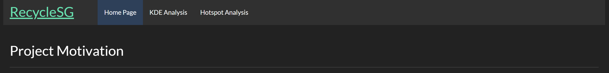
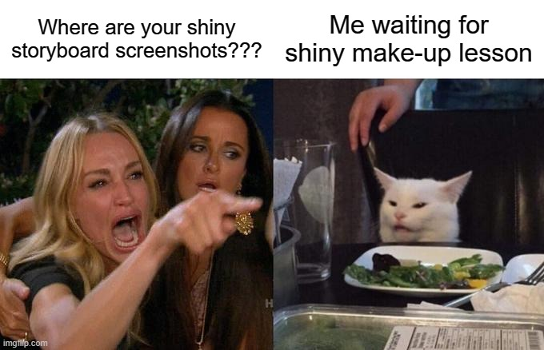

1.0 Introduction
Our project aims to develop a comprehensive application that leverages geospatial analytics to optimize the distribution of recycling bins across Singapore. By analyzing data on population density and existing bin locations, the application will identify spatial patterns, gaps in coverage, and opportunities for improvement in the placement of normal blue recycling bins, incentive bins, and e-waste bins. The application will then provide insights based on the analysis and allow users to interactively explore the data and results.
2.0 Objectives
The objectives of this exercise are to prototype the modules for the geospatial analytics application. The modules will be developed using R and Shiny and will include the following components:
Data Import and Preprocessing: Module for importing and preprocessing the data on population density and existing bin locations.
Spatial Analysis: Module for conducting spatial analysis to identify spatial patterns, gaps in coverage, and opportunities for improvement in the placement of recycling bins.
Kernel Density Estimation (KDE) Analysis: Module for conducting KDE analysis to identify areas with high concentrations of population and recommend the placement of recycling bins.
Interactive Visualization: Module for creating interactive visualizations to present the results of the spatial analysis and allow users to explore the data and results.
3.0 Storyboard
The following storyboard outlines the user interface and functionality of the project:
Data Import: The user will be able to upload CSV files containing the data on population density and existing bin locations.
Data Preprocessing: The module will clean, transform, and merge the datasets to prepare them for spatial analysis.
Data Summary: The user will be able to view a summary of the imported and preprocessed data, including the number of records, data types, and basic statistics.
Spatial Analysis: The user will be able to select the type of spatial analysis to be conducted, such as hotspot analysis, spatial autocorrelation, or density-based clustering.
Kernel Density Estimation (KDE) Analysis: The user will be able to select the type of KDE analysis to be conducted, such as normal blue recycling bins, incentive bins, or e-waste bins.
Analysis Results: The module will present the results of the spatial analysis using interactive maps, charts, and tables.
User Interaction: The user will be able to interact with the visualizations to explore the spatial patterns, gaps in coverage, and opportunities for improvement in the placement of recycling bins.
4.0 UI Design
In Shiny, the user interface is divided into two main panels: the sidebar panel and the main panel.
4.2 Main Panel
Analysis Results: This area of the main panel will display the outputs of the spatial analysis and KDE analysis. It may include an interactive map output, chart outputs (e.g., bar charts, line charts), and table outputs to visualize the results. The analysis results will be updated based on the user inputs and selections in the sidebar panel. The main panel may also include a navigation bar at the top to allow the user to switch between different sections of the application, as shown in the image below.

User Interaction: Within the main panel, the user will be able to interact with the visualizations presented in the “Analysis Results” section. This section may include:
- An interactive map output, allowing the user to zoom, pan, and explore the spatial patterns and bin locations.
- Filtering controls to filter the data based on specific criteria (e.g., bin types, hotspot thresholds).
- Zooming and panning controls for the interactive map.
The Shiny application will use reactive programming principles to update the outputs in the main panel based on the user inputs and selections in the sidebar panel. The layout and styling of the UI elements can be further customized using Shiny’s built-in functions and external CSS frameworks. However, I lack the expertise to produce additional polished prototype screenshots, as I have not yet received instruction in this area.

5.0 Conclusion
This exercise has outlined the objectives, storyboard, and UI design for the geospatial analytics application. The next steps will involve prototyping the modules using R and Shiny, integrating the modules into a comprehensive application, and conducting user testing to gather feedback and refine the application. The final application will provide valuable insights for optimizing the distribution of recycling bins across Singapore, contributing to sustainable waste management and environmental conservation efforts.